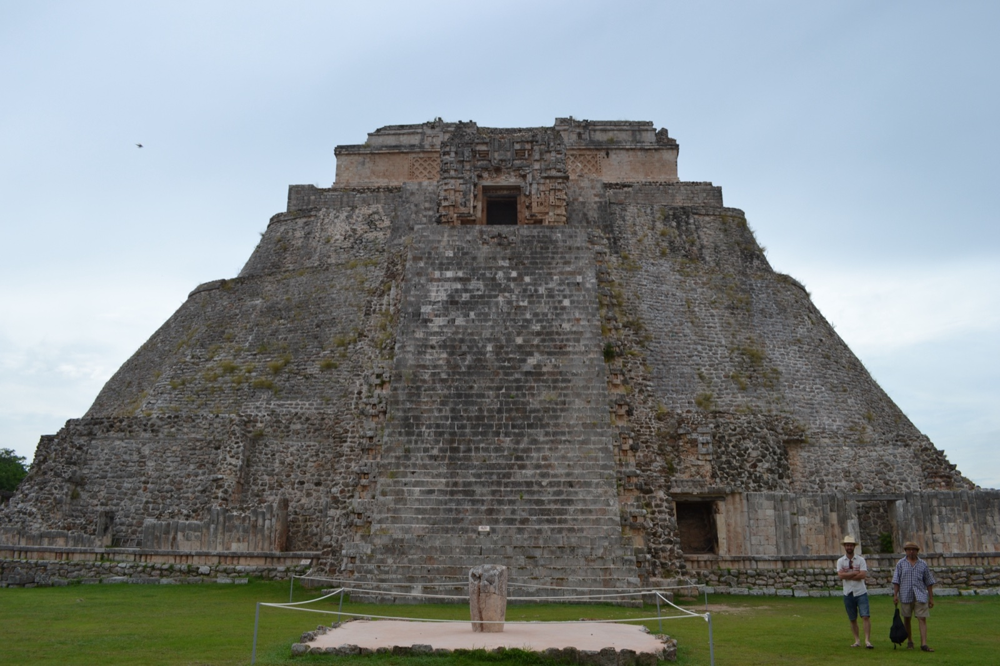
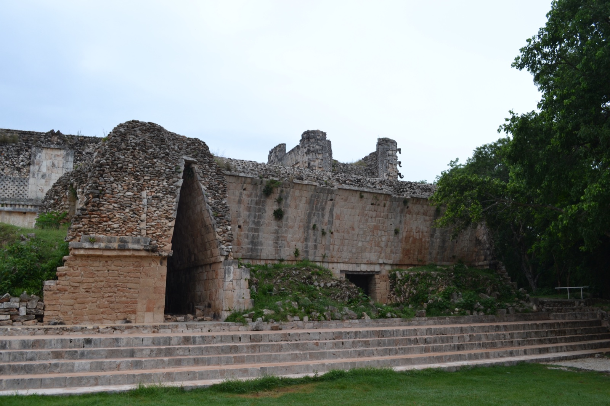
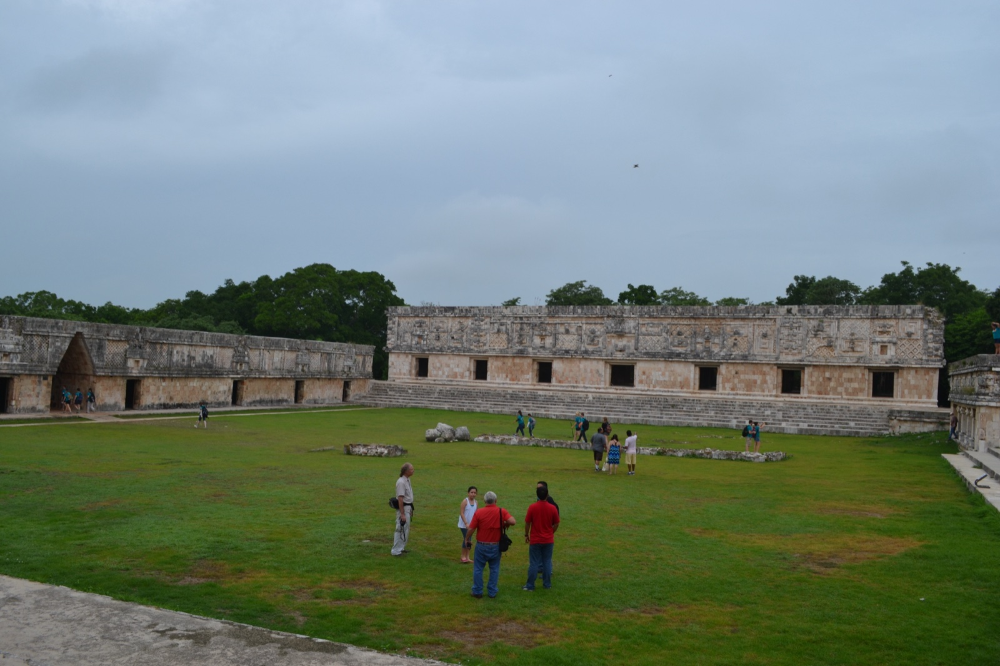
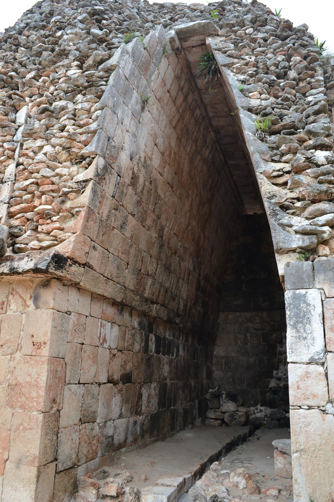
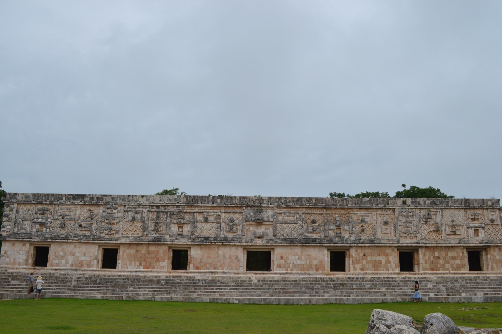
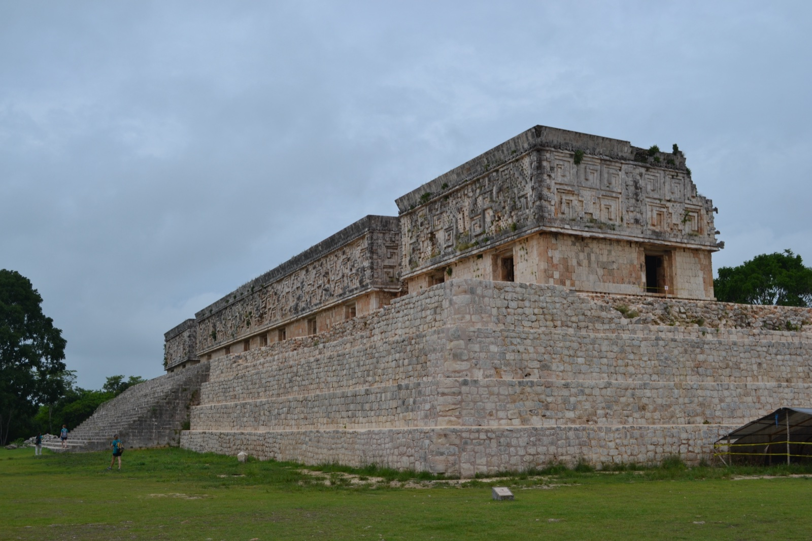
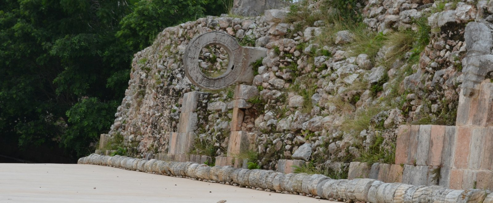
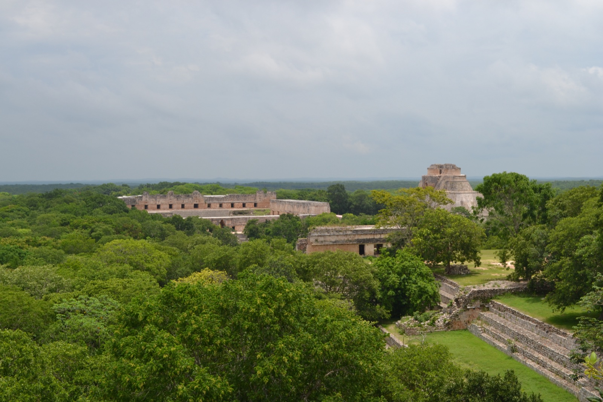

After walking the Palenque ruins in the Chiapas jungle, I headed north into the Yucatán Peninsula. Following a stop at the walled city of Campeche, the next destination was Uxmal, an inland Maya city and UNESCO World Heritage Site (1996), dating from the very end of the Classic period through the Postclassic. You can reach the site directly from major Yucatán cities by ADO long-distance bus — and compared to Chichén Itzá, packed with day-trippers from Cancún, Uxmal is far quieter and far less crowded.
What sets Uxmal apart from other Maya sites is its distinctive architectural style: Puuc. Tightly cut stone with neat corners, decorative friezes concentrated on the upper half of facades, long hooked-nose ornaments of the rain god Chaac repeated across the surface — this is neither the jungle-eaten architecture of Palenque nor the massive pyramids of Teotihuacán, but a geometrically organized aesthetic of refinement. "Puuc" is a Maya word for the low hill country in the southwestern Yucatán Peninsula, and Uxmal sits at the center of the Puuc Route (Ruta Puuc), which links nearby Puuc-style sites including Kabah, Sayil and Labná.
Pyramid of the Magician — the oval-based stepped temple
Walk through the entrance and the first thing that hits you is the Pyramid of the Magician (Pirámide del Adivino). About 35 m tall, the largest building at Uxmal, and shaped with an unusual elongated oval base. Most Maya pyramids sit on square or rectangular platforms, so the rounded silhouette alone is striking.

The "Magician" name comes from a legend that a dwarf magician built the pyramid in a single night. In reality, multiple construction phases overlap inside it, with older temples nested in layers — investigations have shown this clearly. It's a textbook case of the "build-over" pattern that characterizes major Maya monuments.

For safety and conservation, climbing to the summit is now forbidden. Even just standing at the foot of it, though, is overwhelming. Of all the pyramids I saw on this Mexico trip, the one that felt most imposing in person was this one. Officially it's 35 m, lower than Teotihuacán's Pyramid of the Sun (about 65 m), but the oval flank seems to push straight up into the sky from above your head. The closer you walk, the more its surface fills your field of view. There's a kind of size that the numbers don't capture, and it was definitely there.
Nunnery Quadrangle — Puuc style at its finest
To the north of the pyramid is the Nunnery Quadrangle (Cuadrángulo de las Monjas). A central courtyard wrapped on all four sides by long buildings — four structures with 74 rooms total. The Spanish conquistadors named it that because it reminded them of a convent, but the actual function is thought to have been royal residences or administrative quarters.

The upper half of each building is densely carved with the decorative frieze characteristic of Puuc style. Square geometric patterns, woven-looking vertical bands, and at both ends — invariably — the long hooked nose of the rain god Chaac. The contrast between the bare lower facade and the dense decoration above is the essence of Puuc architecture.

Governor's Palace — the apex of Maya architecture
South of the Quadrangle, on top of a three-tier artificial terrace, the Governor's Palace (Palacio del Gobernador) stretches out long and low. About 100 m end to end. Held up as one of the apex achievements of Classic Maya architecture, it's Puuc style at its most fully realized.


The upper facade is famous for more than 100 Chaac-mask carvings repeating horizontally. In the dry Yucatán, prayers to the god of rain and agriculture were literally woven into the building. Beyond that, the palace is also oriented to a peculiar astronomical alignment — its central axis points precisely toward Venus at its maximum southern elongation as seen from Uxmal at the time, demonstrated in the work of archaeoastronomer Anthony Aveni (Skywatchers of Ancient Mexico, University of Texas Press, 1980). For the Maya, Venus governed war, agriculture and royal authority, and calendars based on its observation cycle were woven into political ritual. You can't read that just by looking, but once you know, the building reads as something else entirely.
The ball court
The small open area between the Quadrangle and the Governor's Palace is the ball court (Juego de Pelota). Maya ball courts are universal in this culture, but Uxmal's is modest in scale, nothing like the colossal court at Chichén Itzá.

Climbing the Great Pyramid — Uxmal's only climbable one
The Pyramid of the Magician is off-limits, but the Great Pyramid (Gran Pirámide) at the south end of the site is still open to climbers. Push up through nine tiers in one go and the whole of Uxmal opens up below you.

Buildings that read as separate "points" while you're walking through suddenly assemble into a single "city plan" when you look down on them. Anchored by the Pyramid of the Magician to the north, the Quadrangle, the Governor's Palace, and the ball court line up along a soft southeastern axis. That a Maya city wasn't just a collection of temples but was assembled on top of a clear spatial plan is something you only really feel after the climb.
Walking around, I ran into iguanas several times. They sat motionless in the gaps between stones or on sun-warmed staircases, and when I stepped closer they tilted their heads for a moment and then disappeared silently into a stone seam. Maybe a thousand years ago, the Maya who set these stones saw the same scene.
What Uxmal left me with — Postclassic Puuc collapse
Uxmal is a city that showed the last brilliance of the Classic Maya (roughly 750–950 CE) before the curtain came down. Different from the overwhelming scale of Teotihuacán, different from Palenque's fusion with the jungle — it carries the history of "Puuc style refined to the point of perfection, then collapsing fast".
The Puuc cities were abandoned one after another by around the 10th century, but the cause is not fully resolved. Prolonged drought, population pressure, conflict with neighboring cities, and political absorption into the Postclassic powers centered on Chichén Itzá are thought to have all played a role (see: Encyclopædia Britannica — Uxmal). By the time of the Spanish conquest Uxmal was already in ruins, but it lived on in local Maya oral tradition, and was "rediscovered" by the Western world through the records of explorer John Lloyd Stephens in 1843.
Looking down from the top of the Great Pyramid, Uxmal is the place that shows you "what Maya civilization should have built next" in finished form. The overwhelming scale of Teotihuacán, the boundary with the jungle at Palenque, the geometric refinement of Uxmal — that you can't lump these together as "Maya / Mesoamerican ancient civilization" was the biggest takeaway of the Mexico tour.
Places I visited
Travel notes (general info)
※This section is editorial reference based on public information. Please confirm prices and operating details on official sites.
Getting there
- From Mérida: ADO/SUR bus from Mérida's CAME terminal, about 1h30 (a few daily departures)
- From Campeche: ADO bus, about 3 hours
- By rental car: 80 km from Mérida, about 1h30. Most convenient if you want to circle the full Puuc Route (Kabah / Sayil / Labná)
- Ruta Puuc bus tour: a day-loop bus from Mérida that hits multiple Puuc sites in one day
- Admission: a two-part fee (federal + state) totaling around MX$500 as of 2024. The Luz y Sonido (light and sound show) is separate and may be suspended at certain times
Recommended nearby spots
- Kabah — famous Puuc-style Chaac-mask façade, 23 km from Uxmal
- Sayil — masterpiece Puuc palace, 30 km from Uxmal
- Labná — famous for its Puuc arch, 34 km from Uxmal
- Loltún Caves (Grutas de Loltún) — prehistoric paintings and limestone caverns, 50 km from Uxmal
- Mérida historic district — Catedral de San Ildefonso, Plaza Grande, Paseo de Montejo — the old town of the Yucatán state capital
References
- UNESCO World Heritage Centre — Pre-Hispanic Town of Uxmal
- INAH (Mexico's National Institute of Anthropology and History) — Zona Arqueológica de Uxmal
- Encyclopædia Britannica — Uxmal
- Yucatán State Tourism Board — Zona Arqueológica de Uxmal
- Yucatán State Tourism Board — Ruta Puuc
- Anthony F. Aveni, Skywatchers of Ancient Mexico (University of Texas Press, 1980) — foundational work on the Venus alignments